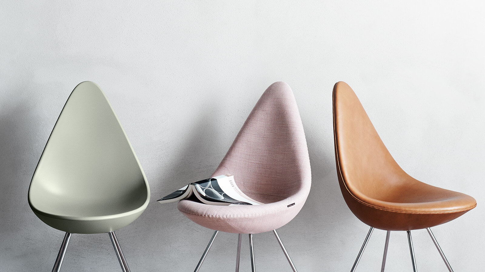
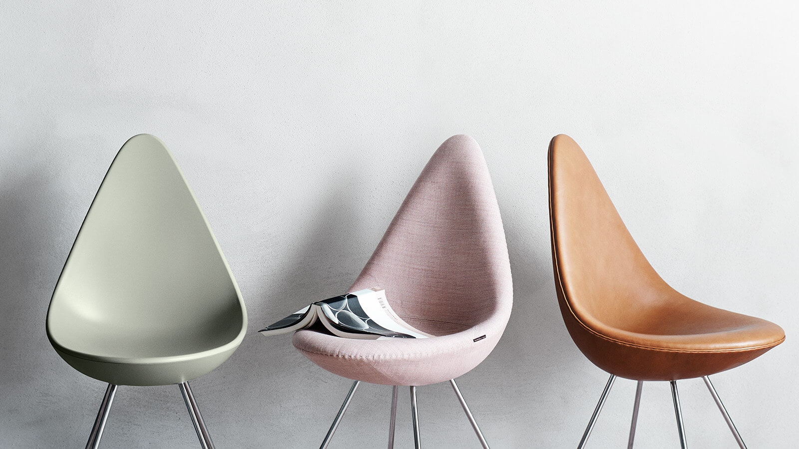
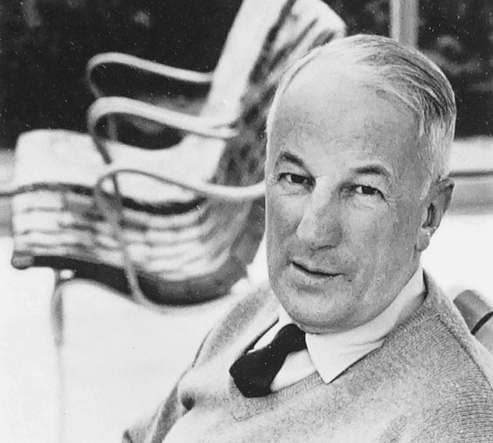
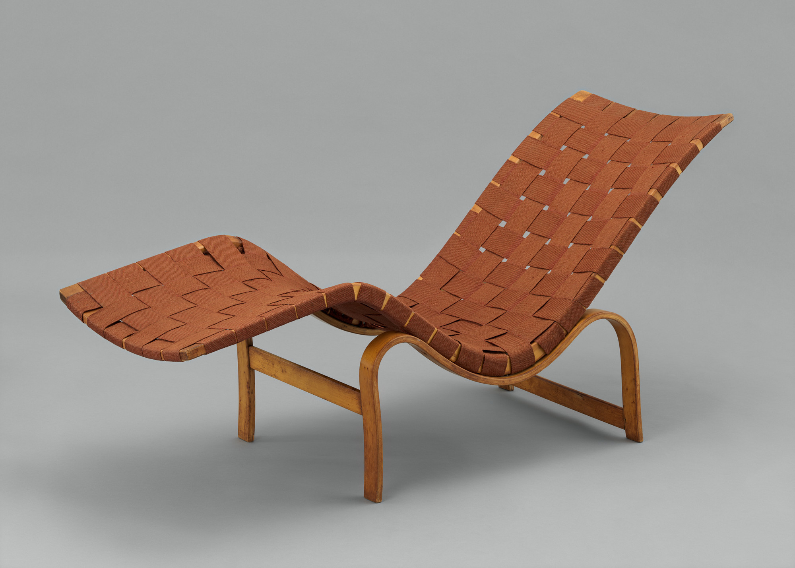
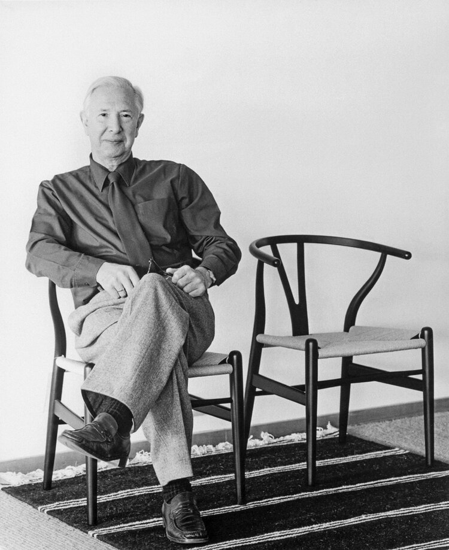
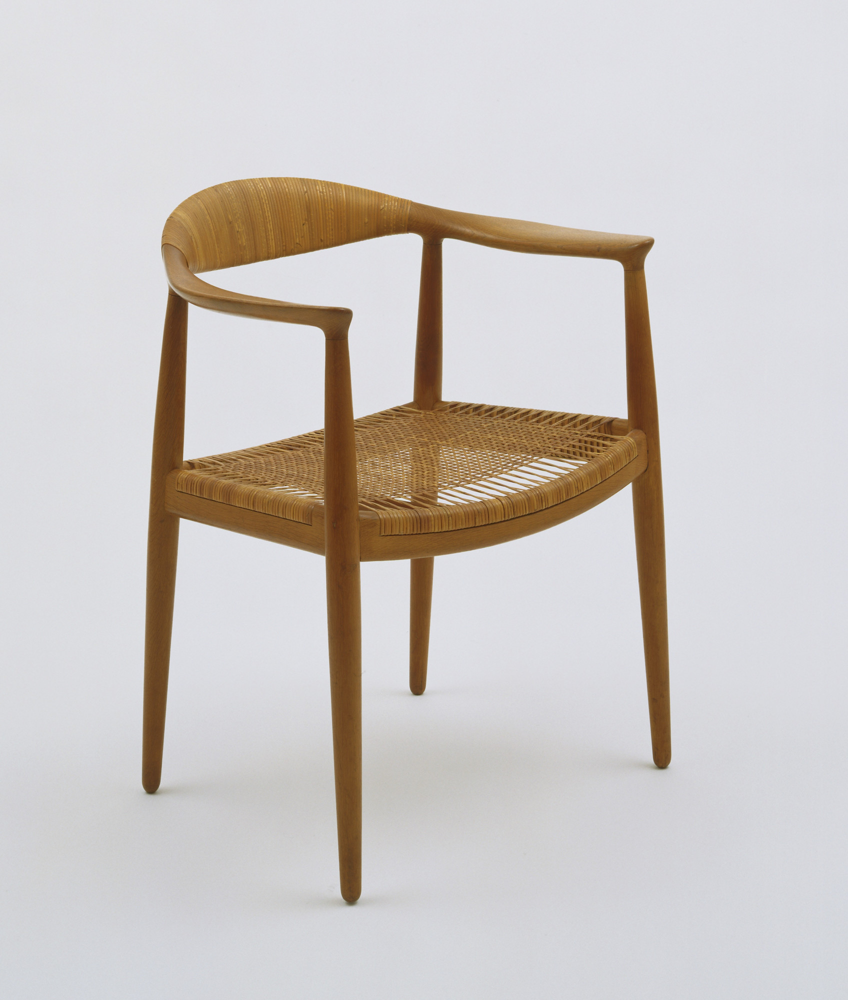
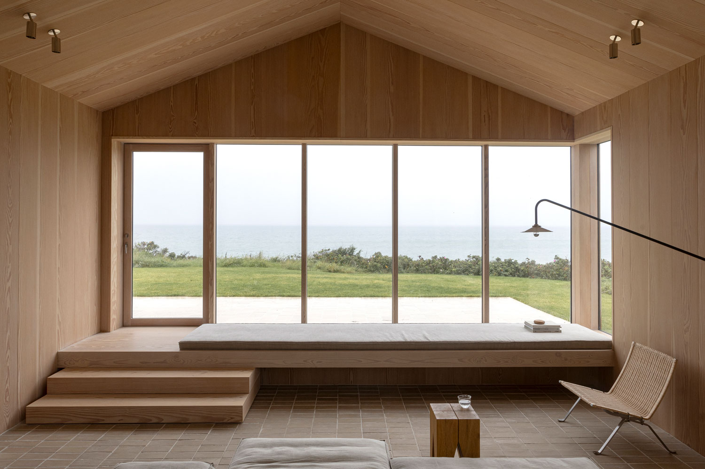
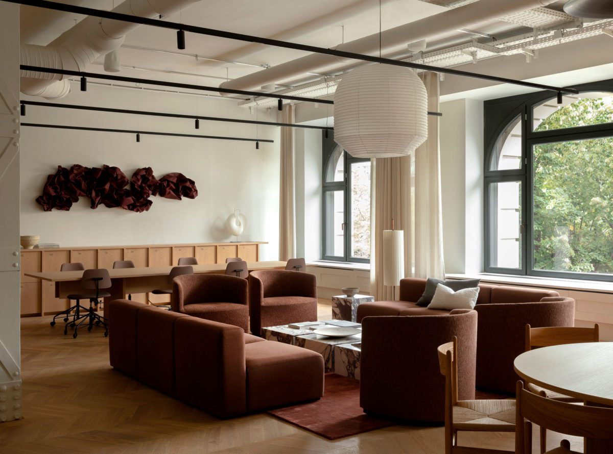
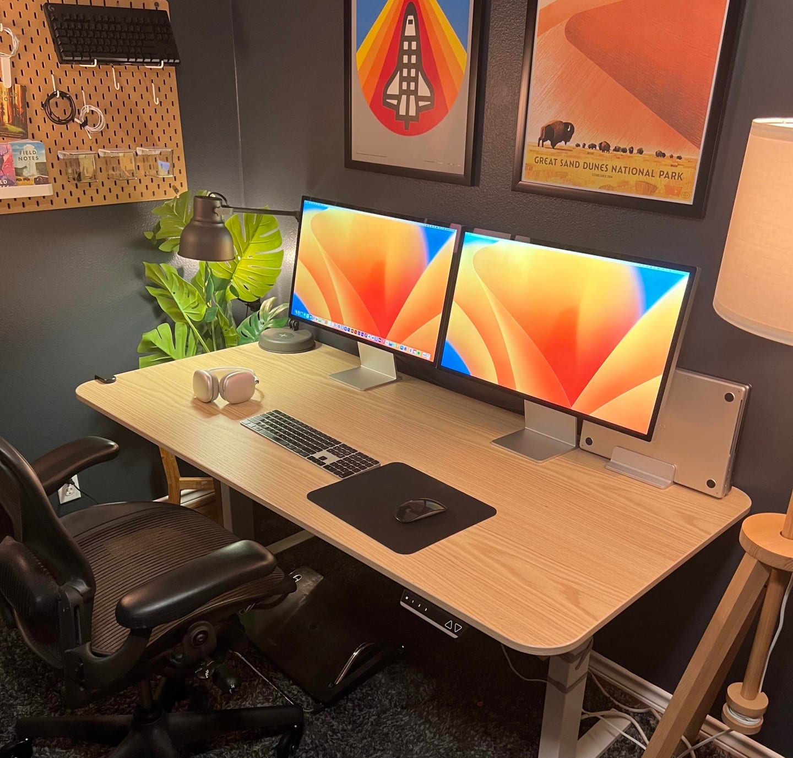

Arne Jacobsen
Denmark (1902–1971)
A master of total design, Jacobsen created not just furniture but entire visual systems
for buildings and brands. His Egg Chair and SAS House in Copenhagen remain icons of
Nordic design. His work exemplified the principle that every detail matters and contributes
to a unified whole.
Legacy: Demonstrated how Nordic principles scale from single objects to
architectural systems.


Brunos Mathsson
Sweden (1907–1988)
Known for his organic, flowing furniture designs, Mathsson believed form should follow
nature, not geometry. His work emphasized comfort without ornamentation. He collaborated
with Arne Jacobsen and was instrumental in establishing Swedish modernism globally.
Legacy: Proved that simplicity and organic form create timeless, livable design.


Hans Wegner
Denmark (1914–2007)
A prolific furniture designer, Wegner created over 500 designs during his lifetime,
each demonstrating masterful joinery and respect for materials. His Wishbone Chair and
Peacock Chair are icons. He believed in craftsmanship and that furniture should be made
to last generations.
Legacy: Elevated furniture design as craft and demonstrated the value of
timelessness.


Norm Architects
Denmark (Contemporary)
A contemporary design studio blending Nordic minimalism with global influences.
Norm Architects creates spaces, interiors, and experiences that emphasize human connection,
natural materials, and restraint. Their work honors Nordic values while pushing toward
sustainability and accessibility.
Legacy: Demonstrates how Nordic principles remain vital and evolving in
21st-century design.


Note Design Studio
Sweden (Contemporary)
A multidisciplinary studio working across graphic design, interiors, and product design.
Note Design Studio embodies contemporary Nordic values: collaboration, sustainability,
and a belief that good design is accessible to everyone. Their work balances minimalism
with warmth and humanity.
Legacy: Shows how Nordic design adapts to digital culture while maintaining
core principles.